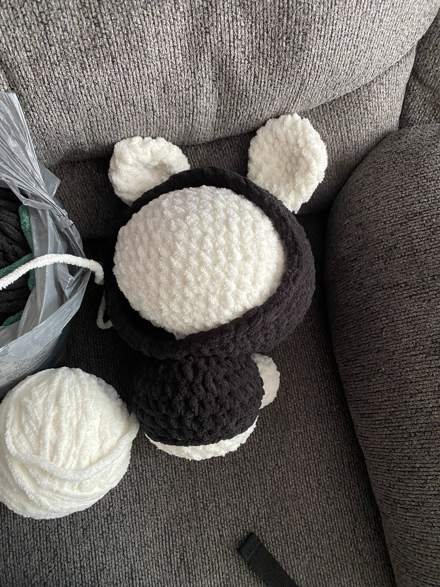
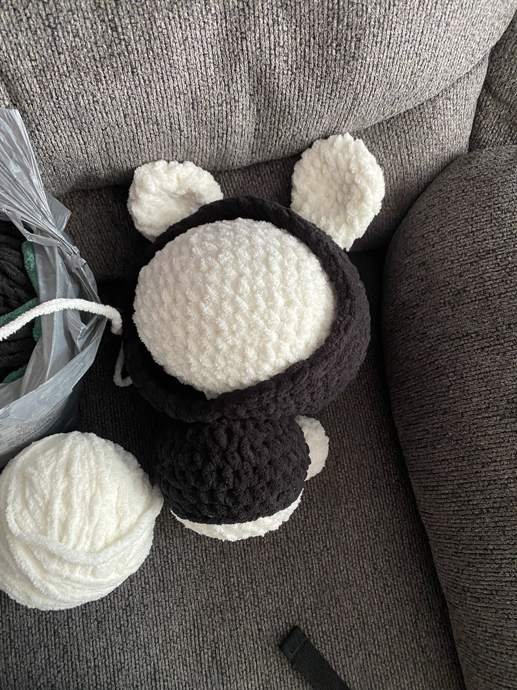

My name is Leslie Esquivel. I am 22 years old, and plan on graduating Spring 2026. I am the second oldest in my family, with an older brother and a younger sister and brother. Our pet is a kitten who's name is Cheeto (he is orange, like a Cheeto). I am an adventurous person, often being referred to an adrenaline junkie. I love rollercoasters and have been skydiving twice already. I plan on going again this summer.
Cheeto is the name of my kitten. He was born on July 17th, 2024. I adopted him when he turned 5 weeks old. He just turned 6 months on January 17th. He is very playful and currently his favorite toy is a tunnel that has bells attached to the ends. He tends to become very active once I am ready to go to bed. This means I hear him play with his toys at 4 in the morning. Once it gets warmer outside I plan to teach him to be comfortable on leash.
Currently, I am a fourth year Computer Science student. I am in the Coterminal Program pursing my Masters Degree in ITM. My programming experience consists of languages I have learned in other computer science classes such as R, Python, HTML, CSS, JavaScript and OCaml. I have taken a couple of ITMD classes where I learned the basics of HTML, CSS and JavaScript. I still have much room for improvement and I am excited to learn more.
ITMD542 is about Full Stack Development. So far, we have reviewed the basics so that we have a refresher from the previous class that taught introduced us to HTML, CSS and Javascript. I believe I still need a lot of improvement with CSS and Javascript as they tend to test my patience, but know that will come with practice. I also have experience with the basics of different programming languages such as Python, R, and Java. Currently in another class I am learning OCaml. I am excited to be able to practice HTML, CSS, and Javascript.

 
